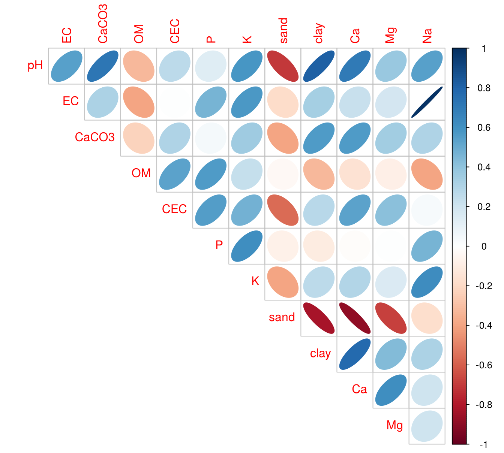
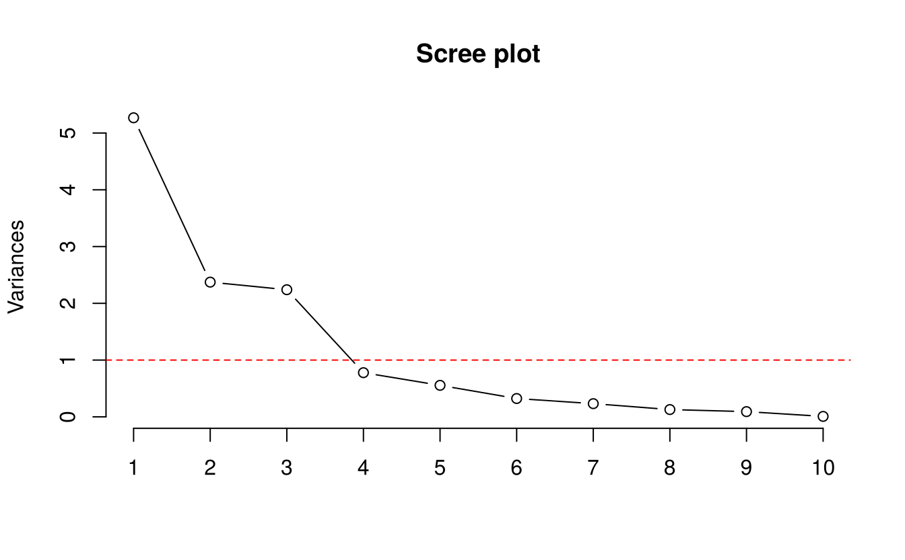
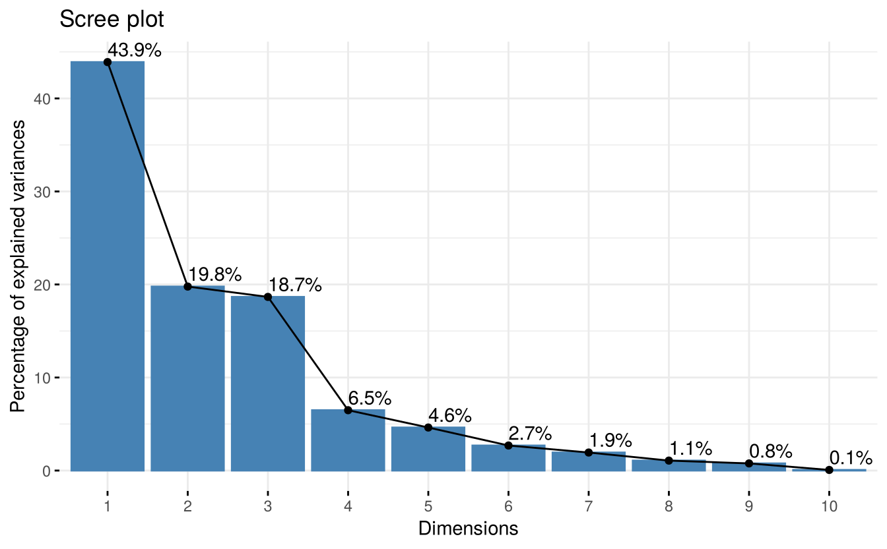
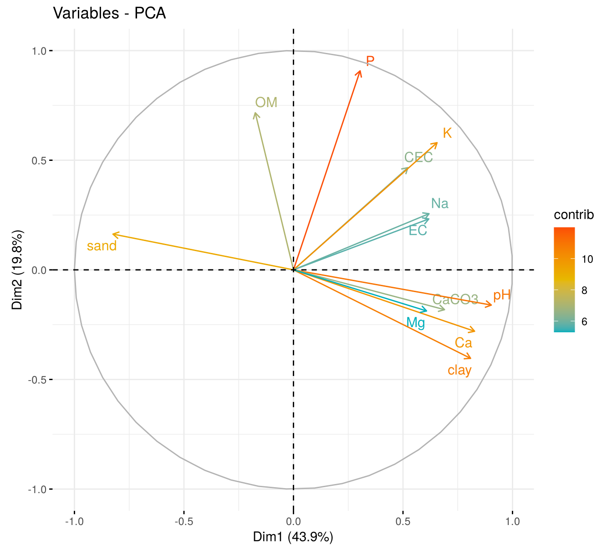
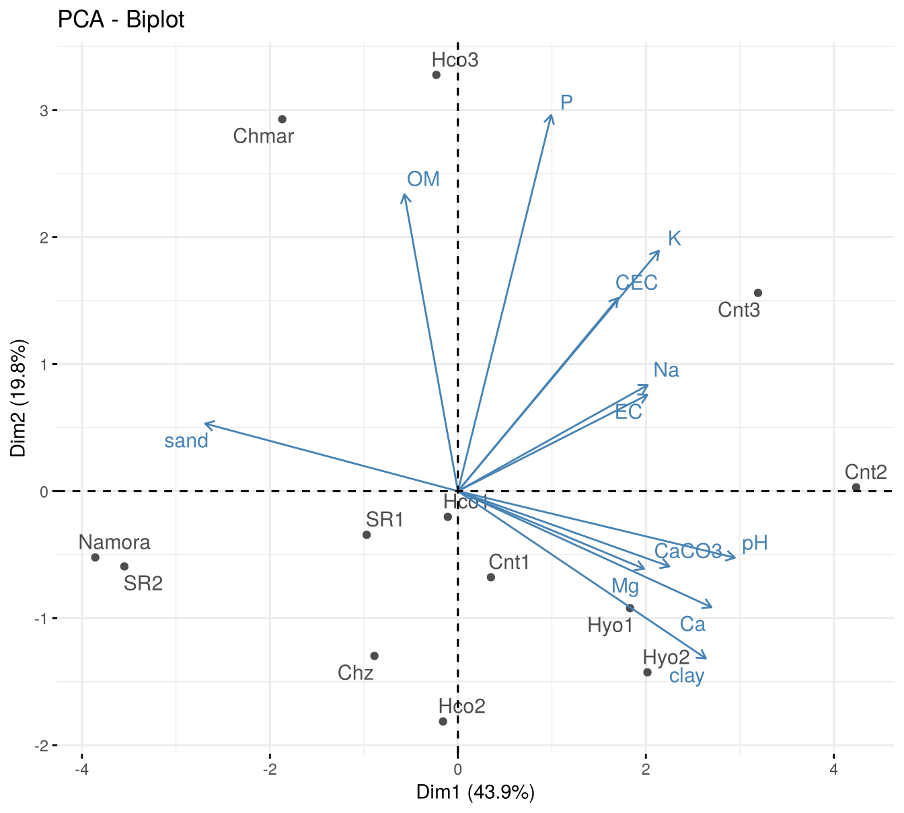

19 Principal component analysis
Agricultural studies often record many correlated variables on each unit: a dozen soil properties per site, twenty morphological traits per accession, several quality parameters per sample. Multivariate methods analyse these variables together. Principal component analysis (PCA) is the most widely used. It replaces \(p\) correlated variables by a smaller number of new, uncorrelated variables, the principal components (PCs), that retain most of the information (variance) in the data.
19.1 The idea
The first principal component is the linear combination of the (standardised) variables
\[\text{PC}_1 = a_{11} x_1 + a_{12} x_2 + \cdots + a_{1p} x_p\]
that has the largest possible variance, subject to \(\sum_j a_{1j}^2 = 1\). The second PC has the largest variance among combinations uncorrelated with the first, and so on. Mathematically:
- the coefficients (loadings) of the PCs are the eigenvectors of the correlation (or covariance) matrix;
- the variance of each PC is the corresponding eigenvalue \(\lambda_k\);
- the proportion of total variance explained by PC\(_k\) is \(\lambda_k / \sum \lambda_j\) (for standardised variables, \(\sum\lambda_j = p\)).
If the variables are measured in different units (pH, percentages, ppm), PCA must be done on the correlation matrix, i.e. on standardised variables. In R this means scale. = TRUE in prcomp(). Otherwise the variables with the largest variance dominate the analysis.
19.2 Example: soils of 13 localities in Peru
The soil data in agricolae give the physical and chemical properties of soils from 13 localities in Peru, analysed at La Molina National Agrarian University. We use 12 properties: pH, electrical conductivity (EC), calcium carbonate (CaCO3), organic matter (MO in the data, renamed OM), cation exchange capacity (CIC, renamed CEC), available P and K, sand and clay content, and exchangeable Ca, Mg and Na.
library(agricolae)
data(soil)
x <- soil[, c("pH", "EC", "CaCO3", "MO", "CIC", "P", "K",
"sand", "clay", "Ca", "Mg", "Na")]
names(x)[names(x) == "MO"] <- "OM"
names(x)[names(x) == "CIC"] <- "CEC"
rownames(x) <- soil$place
round(head(x), 2)#> pH EC CaCO3 OM CEC P K sand clay Ca Mg Na
#> Namora 3.8 0.72 0.0 1.7 5.76 8.1 28 80 4 0.74 0.15 0.27
#> Hyo1 7.2 1.00 1.4 2.6 20.00 17.5 166 26 32 17.21 2.06 0.26
#> Hyo2 8.4 0.32 9.6 2.0 18.88 17.6 124 44 24 14.91 3.37 0.24
#> SR1 4.8 0.83 0.0 1.9 17.28 15.8 86 58 12 12.49 1.90 0.32
#> SR2 4.4 0.49 0.0 2.0 6.40 7.2 30 78 8 0.76 0.13 0.26
#> Cnt1 7.6 1.09 0.9 1.3 13.60 8.9 350 48 14 10.56 1.79 0.37The silt content (slime in the data) is left out deliberately: sand + silt + clay = 100%, so any one of the three is an exact linear function of the other two. Including all three would produce a component with zero variance.

Many of the soil properties are strongly correlated, so a few components should summarise them well.
19.3 PCA with prcomp()
#> Importance of components:
#> PC1 PC2 PC3 PC4 PC5 PC6 PC7 PC8
#> Standard deviation 2.295 1.540 1.497 0.8821 0.7449 0.5680 0.4820 0.3580
#> Proportion of Variance 0.439 0.198 0.187 0.0648 0.0462 0.0269 0.0194 0.0107
#> Cumulative Proportion 0.439 0.637 0.823 0.8883 0.9345 0.9614 0.9808 0.9915
#> PC9 PC10 PC11 PC12
#> Standard deviation 0.30306 0.08745 0.04971 0.02500
#> Proportion of Variance 0.00765 0.00064 0.00021 0.00005
#> Cumulative Proportion 0.99910 0.99974 0.99995 1.00000The first three components explain 44%, 20% and 19% of the total variance, together 82%.
19.3.1 How many components to keep?
Common rules:
- Kaiser’s criterion: keep components with eigenvalue greater than 1 (i.e. explaining more than one original standardised variable).
- Cumulative variance: keep enough components to explain, say, 70–80% of the total variance.
- Scree plot: keep the components before the “elbow” where the curve flattens.
eigenvalues <- pca$sdev^2
round(eigenvalues, 2)#> [1] 5.27 2.37 2.24 0.78 0.55 0.32 0.23 0.13 0.09 0.01 0.00 0.00
Three eigenvalues exceed 1, and the scree plot flattens after the third component. We keep three components.
19.3.2 Interpreting the loadings
round(pca$rotation[, 1:3], 2)#> PC1 PC2 PC3
#> pH 0.39 0.10 0.09
#> EC 0.27 -0.15 0.48
#> CaCO3 0.30 0.12 0.01
#> OM -0.08 -0.47 -0.41
#> CEC 0.23 -0.30 -0.41
#> P 0.13 -0.59 0.04
#> K 0.29 -0.38 0.10
#> sand -0.36 -0.11 0.29
#> clay 0.35 0.26 -0.06
#> Ca 0.36 0.18 -0.23
#> Mg 0.26 0.12 -0.22
#> Na 0.27 -0.17 0.48Large loadings (in absolute value) show which variables dominate each component:
- PC1 has high positive loadings for pH, Ca, clay and CaCO3 and a negative loading for sand. It contrasts fine-textured, calcareous, base-rich soils (high scores) with sandy, acidic soils (low scores).
- PC2 is dominated by P, organic matter, K and CEC (all with the same sign): a fertility component.
- PC3 has high loadings for EC and Na, with the opposite sign to organic matter and CEC: a salinity–sodicity component.
The sign of a principal component is arbitrary: multiplying all loadings and scores of a component by −1 gives the same solution. Different programs (and versions) may therefore report opposite signs. Interpret the pattern of loadings, not their absolute sign.
19.3.3 Scores
The scores are the values of the components for each sample:
round(pca$x[, 1:3], 2)#> PC1 PC2 PC3
#> Namora -3.71 0.50 1.57
#> Hyo1 1.76 0.88 -1.55
#> Hyo2 1.94 1.37 -1.07
#> SR1 -0.93 0.33 -0.24
#> SR2 -3.41 0.57 1.31
#> Cnt1 0.34 0.65 0.60
#> Cnt2 4.07 -0.03 0.43
#> Cnt3 3.07 -1.50 3.53
#> Chz -0.85 1.25 0.07
#> Chmar -1.80 -2.81 -0.83
#> Hco1 -0.10 0.19 -1.37
#> Hco2 -0.15 1.74 -0.73
#> Hco3 -0.22 -3.15 -1.72The localities from the coastal Cañete valley (Cnt2, Cnt3) have the highest PC1 scores (calcareous, clayey soils), while Namora and San Ramón (SR2) have the lowest (sandy, acidic soils).
19.4 PCA with FactoMineR and factoextra
The FactoMineR and factoextra packages (Husson et al. 2023; Kassambara and Mundt 2020) give richer output and publication-quality graphs. PCA() standardises the variables by default.
library(FactoMineR)
library(factoextra)
res <- PCA(x, graph = FALSE)
round(res$eig[1:5, ], 2)#> eigenvalue percentage of variance cumulative percentage of variance
#> comp 1 5.27 43.91 43.91
#> comp 2 2.37 19.78 63.68
#> comp 3 2.24 18.66 82.34
#> comp 4 0.78 6.48 88.83
#> comp 5 0.55 4.62 93.45The correlations between the variables and the components are easier to interpret than raw loadings:
round(res$var$cor[, 1:3], 2)#> Dim.1 Dim.2 Dim.3
#> pH 0.90 -0.16 0.14
#> EC 0.62 0.23 0.71
#> CaCO3 0.69 -0.18 0.02
#> OM -0.17 0.72 -0.62
#> CEC 0.52 0.47 -0.61
#> P 0.30 0.91 0.05
#> K 0.66 0.58 0.15
#> sand -0.82 0.16 0.44
#> clay 0.81 -0.40 -0.09
#> Ca 0.83 -0.28 -0.35
#> Mg 0.61 -0.19 -0.32
#> Na 0.62 0.26 0.71
fviz_eig(res, addlabels = TRUE)
fviz_pca_var(res, col.var = "contrib", repel = TRUE,
gradient.cols = c("#00AFBB", "#E7B800", "#FC4E07"))
fviz_pca_biplot(res, repel = TRUE, col.var = "steelblue", col.ind = "grey30")
19.5 Uses of principal components
- Data reduction: summarise many traits by a few components for display or further analysis.
- Grouping: plot genotypes, sites or samples on the first two PCs to see clusters (e.g. in germplasm characterisation).
- Indices: use the first PC as a composite index (e.g. a soil quality index).
- Principal component regression: use the uncorrelated component scores as predictors in place of highly collinear variables (Chapter 18).
Exercises
- Repeat the PCA of the soil data including the micro-nutrients B, Cu, Fe, Mn and Zn. How many components have eigenvalues greater than 1?
- Carry out a PCA of the four measurements in
irisand plot the scores of the first two components coloured by species. Which variables dominate PC1? - Using the
yacondata inagricolae, average the traitsheight,stalks,roots,FOS,brix,foliageanddryover replications for each entry and locality, and perform a PCA. Interpret the first two components.